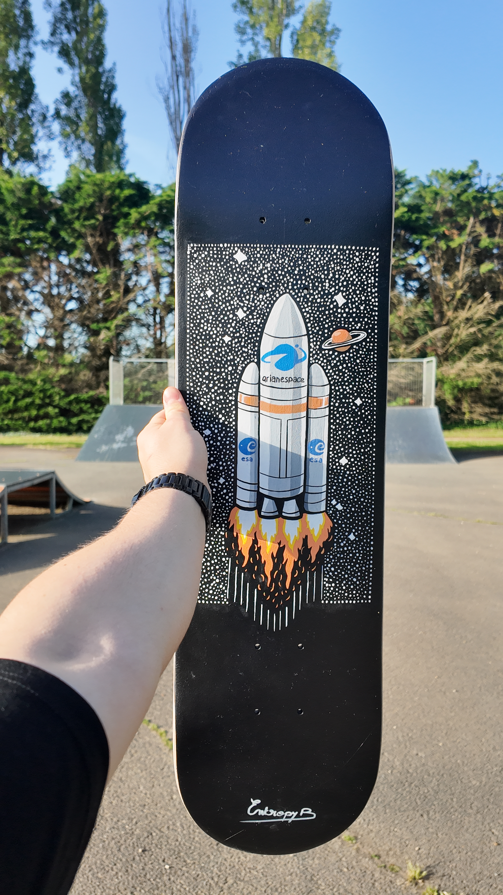

custom Ariane 5
Une planche unique inspirée de la fusée Ariane 5, entre souvenir d’enfance, culture spatiale et design minimaliste.



Détails du produit
- Type : skateboards custom unique
- État : planche rénové, en très bon état général
- Usage : décoratif, ou ride possible
- Design : Arine 5, style minimaliste et graphique
- Réalisation : custom peint à la main
- Pièce : exemplaire unique
- Disponibilité : disponible à la vente
Esprit du custom
Ce custom représente un souvenir personnel fort : celui de Toulouse, liée à l'aéronautique et à l'esapce. La grande maquette grandeur nature d'Ariane 5 à la cité de l'Espace m'am marqué, à une époque où tout ce qui volait me faisait rêver. Et à une certain échelle, dans les sports de glisse, on vole un peu tous à notr hauteur.
La planche reprend cette fascination infantile dans un style sobre, proche de l'esprit du custom Einstein : une silhouette forte, immédiatement reconnaissable, pensée comme un objet à la fois graphique, symbolique et lié à l'univers EntropyBoards.
Elle peut être utilisée comme pièce décorative, mais aussi pour ouler si l'envie est présente : les planche est en bon état et a été rénovée.